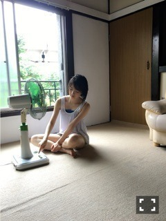

2016/0731Sunうすしお顔
8月！蝉がみんみん〜

ヤンガンのオフショット
私はエアコンより扇風機派です✨
みんな平等に涼しくなるように
堀家は首が回る設定にしていて
自分の所にくるのをじーっと
今か今かと待っています笑

バスタオルにくるまれる
今発売中のBUBKAさんでは
私、松村さん、いくちゃんで
対談しています！
"天才" "宇宙人" "変人"
と見出しに書いてありました(・ω・)笑
是非みてください♪
告知
発売⇩
○「BOMB」堀飛鳥生田 表紙&巻頭
○「ヤングガンガン」表紙＆巻頭
○「読売中高生新聞」
○「non-no」
○「B.L.T.」
○「BUBKA」
○8/10発売「blt graph. vol.10」
TV、ラジオ
○毎週日曜日 18:00〜
乃木坂の「の」
○毎週日曜日 24:00〜
乃木坂工事中


写真を撮っていたらひょっこり入ってきた
かずみさん可愛い〜〜♡
Mステでは髪を巻き巻きしました！
階段登場シーンはたこ焼きポーズ(0･ω･0)
ほっぺたが柔らかくてぷにぷに
なのでよくたこ焼きたこ焼き〜って
小さい頃からしていたの！
握手会とかでもリクエストしてくださったら
全力のたこ焼き(0･ω･0)しますよ〜♪

発売中のnon-no
私はみなみあすかと出させて
いただいています！
真っ黒の洋服に髪もウェット感のある
感じで大人っぽく撮っていただきました。
七瀬さんの表紙、可愛い(,,•﹏•,,)
そして
10月に行われるGirlsAwardで
ランウェイを歩かせていただきます✨
今から食生活の改善に運動、姿勢など
できる事から始めていきます。
緊張8楽しみ2！頑張る。
ではでは
今日も1日楽しみおな♪
2016/07/31 13:30
コメント(439)
お疲れ様ｫｫｵｵｰ!!ヽ(ﾟωﾟヽ)(ﾉﾟωﾟ)ﾉ ｵｵｫｫｰ!!次の握手会の時にたこ焼き降るね
変人未央ちゃんこんにちは！
天才いくちゃん宇宙人松村変人未央ちゃんのトークとか壊れてそう笑
BUBKA買わないと！！
ずーとのツーショットって珍しくない？
めっちゃ可愛くて最高よ！
今日のボウリングどうだった？
知り合いの生誕委員さんが参加してたんよ！
俺も応募したけど外れちゃった…>_<…
ボウリング得意だったから見せたかったなぁ…笑
乃木のの聴いてるよ！
今回のメンバー自由やね！
収録中にスタジオ出ちゃったり笑い声が止まらなかったり、面白いね^_^
未央ちゃんおしゃべり上手くなったね！！
シブヤノオト放送されたよ！
公開収録行ってたんだ俺^_^
コールできると思って無かったからその分楽しかったなぁ！
未央ちゃんの推しタオル掲げてたけど、気づいてもらえたかな？
また明日も仕事かな？
俺も未央ちゃんに会うためにバイトがんばるね！
じまさんより
天才いくちゃん宇宙人松村変人未央ちゃんのトークとか壊れてそう笑
BUBKA買わないと！！
ずーとのツーショットって珍しくない？
めっちゃ可愛くて最高よ！
今日のボウリングどうだった？
知り合いの生誕委員さんが参加してたんよ！
俺も応募したけど外れちゃった…>_<…
ボウリング得意だったから見せたかったなぁ…笑
乃木のの聴いてるよ！
今回のメンバー自由やね！
収録中にスタジオ出ちゃったり笑い声が止まらなかったり、面白いね^_^
未央ちゃんおしゃべり上手くなったね！！
シブヤノオト放送されたよ！
公開収録行ってたんだ俺^_^
コールできると思って無かったからその分楽しかったなぁ！
未央ちゃんの推しタオル掲げてたけど、気づいてもらえたかな？
また明日も仕事かな？
俺も未央ちゃんに会うためにバイトがんばるね！
じまさんより
未央ちゃん、たこ焼きお願いしていいの？
何度も何度もやってもらうわ^_^
non-noって男が買っても大丈夫なの？笑
何度も何度もやってもらうわ^_^
non-noって男が買っても大丈夫なの？笑
たこやきたこやき〜〜^_^
あがあがあががががー(-´〇｀-)＝風＝(扇風機
まさか扇風機派がいるなんて！
自分の家もずーと扇風機派だよ！エアコンがずっと買ってないらしいよ！
エアコンつけると体調不良になります。。では！
自分の家もずーと扇風機派だよ！エアコンがずっと買ってないらしいよ！
エアコンつけると体調不良になります。。では！
みおなちゃんはエアコンより扇風機派なのか…。
じゃ、みおなちゃんは昔の人なんだ(笑)
私は子供の頃はクーラーがなくて扇風機だけで暑さを我慢していたからね(^-^)。
じゃ、みおなちゃんは昔の人なんだ(笑)
私は子供の頃はクーラーがなくて扇風機だけで暑さを我慢していたからね(^-^)。
堀ちゃん、きれいになりました
堀ちゃん可愛すぎ(o^^o) ガルアワ応募してます！スタイル抜群で銀河系な堀ちゃんなら大丈夫だよ！ファイトp(^_^)q
未央奈ちゃんMステお疲れ様
可愛いかったよ
ヤンマガオフショット可愛い
ボーリング大会楽しかった？
可愛いかったよ
ヤンマガオフショット可愛い
ボーリング大会楽しかった？
♡♡♡
最近の堀ちゃん透明感際立ってて
歌番組でもなんでもずーっと見てしまう( *｀ω´)
堀ちゃんってショートなのにサラッサラな髪だけど、
縮毛とかしてるの？
どうしてそんなに綺麗なの？
扇風機は自分が長く当たってたいから首は回さないなぁ〜笑 やけど、ヒーターとかはずっとあってると一点が熱くなっちゃうから首回します〜
みーおっな、みーおっな、みーおーなっ
どーしてそんなに可愛いの笑
これからも頑張って！
どーしてそんなに可愛いの笑
これからも頑張って！
未央奈ー！ブログ更新ありがとう！！最近未央奈がメディアに多く出ててめっちゃ嬉しい！今のとこ全部買ってます！！笑おれが買うの追いつかないぐらいいっぱいメディア出てなー！これからの活躍をもっともっと期待してるでー
巻き巻き未央奈みたかったなあ
Mステ色々あって見れなかった〜（；＿；）
握手会でも巻き巻きしてほしい！！
そして、たこ焼きもしてもらお〜！
ランウェイ歩くの緊張すると思うけど
楽しんでね
未央奈ちゃんこんばんは！！
セミが鳴き出して夏らしくなってきたね！
興味あるかわからないけど
セミの鳴き声でセミの種類を見分けることができるんだよ！！
ズスジィズズジィズズジィイィ〜って鳴くのがアブラゼミ
ミーンミンミンミンって鳴くのがミンミンゼミ
ジィジィジィジィジィって鳴くのがクマゼミ
ちょっと高めでジィ〜〜〜〜って鳴くのがニイニイゼミ
高めでﾐﾝﾐﾝﾐﾝﾐﾝﾐﾝﾐﾝﾐﾝﾐﾝってなくのがヒグラシ
他にもエゾゼミとかエゾハルゼミツクツクボウシとか種類がいるよ
お休みの日とかに扇風機で涼みながら聞き分けてみるのも楽しいかも笑
かずみんとのツーショット最高！！ありがとう！！
前のブログのコメントで｢かずみおなのツーショット見たい｣って言ったの読んでくれたのかな(*´`)♡笑 ありがとう！！
かずみんすごく優しいからもっとたくさん撮ってもらってね☺
今度握手会でたこ焼きリクエストしまーす！
真ん中にタコちゃんいるといいなぁ笑(^ε^)
ガルアワ楽しみにしてるよ！
リラックスが1番！元気が1番！
ファイト！！
来週も１週間楽しみおな！！
ガイシホール行くよ！
セミが鳴き出して夏らしくなってきたね！
興味あるかわからないけど
セミの鳴き声でセミの種類を見分けることができるんだよ！！
ズスジィズズジィズズジィイィ〜って鳴くのがアブラゼミ
ミーンミンミンミンって鳴くのがミンミンゼミ
ジィジィジィジィジィって鳴くのがクマゼミ
ちょっと高めでジィ〜〜〜〜って鳴くのがニイニイゼミ
高めでﾐﾝﾐﾝﾐﾝﾐﾝﾐﾝﾐﾝﾐﾝﾐﾝってなくのがヒグラシ
他にもエゾゼミとかエゾハルゼミツクツクボウシとか種類がいるよ
お休みの日とかに扇風機で涼みながら聞き分けてみるのも楽しいかも笑
かずみんとのツーショット最高！！ありがとう！！
前のブログのコメントで｢かずみおなのツーショット見たい｣って言ったの読んでくれたのかな(*´`)♡笑 ありがとう！！
かずみんすごく優しいからもっとたくさん撮ってもらってね☺
今度握手会でたこ焼きリクエストしまーす！
真ん中にタコちゃんいるといいなぁ笑(^ε^)
ガルアワ楽しみにしてるよ！
リラックスが1番！元気が1番！
ファイト！！
来週も１週間楽しみおな！！
ガイシホール行くよ！
今度の握手会で全力200％のたこ焼きしてもらおう(笑)
暑さに負けず１日１日頑張って行きましょう
暑さに負けず１日１日頑張って行きましょう
未央奈ちゃん、こんばんは！
Mステ見ました～。可愛かったです！
たこ焼きポーズ一緒にしたいなあ
Girls Awardに向けて、体調を崩さないように無理せずがんばってください(*ˆˆ*)
それでは、おやすみおな♡
Mステ見ました～。可愛かったです！
たこ焼きポーズ一緒にしたいなあ
Girls Awardに向けて、体調を崩さないように無理せずがんばってください(*ˆˆ*)
それでは、おやすみおな♡
ヤンガン超かわいかった！！
ポリスの時の髪型も好きです。大阪のライブでもかわいいなと思ってたので。。
暑いけど、頑張ってな～！
ポリスの時の髪型も好きです。大阪のライブでもかわいいなと思ってたので。。
暑いけど、頑張ってな～！
みおな～お疲れさまー。
BUBKA見ました。地球外生命体は良かったね。宇宙人は真夏さんですもんね（笑）
乃木坂ポリス面白かった。あらロマも良かったよー。
全国ツアー名古屋に参戦します。楽しみにしています。
体調には気を付けてね。
おやすみおな～
BUBKA見ました。地球外生命体は良かったね。宇宙人は真夏さんですもんね（笑）
乃木坂ポリス面白かった。あらロマも良かったよー。
全国ツアー名古屋に参戦します。楽しみにしています。
体調には気を付けてね。
おやすみおな～
ガンガンは文句なし！
ノンノは、なぁちゃん さすが！
でも、みなみの可能性はそんなものではない！！
まあ〜 みおならしく自然体でいきましょう！！！
ノンノは、なぁちゃん さすが！
でも、みなみの可能性はそんなものではない！！
まあ〜 みおならしく自然体でいきましょう！！！
10月のGirlsAward
楽しみだなあ(￣▽￣)
未央奈、おはよう。こんにちは。こんばんは。
モバメお返事タイム！
ボウリングイベントお疲れ様でしたー( ´ ▽ ` )ﾉ
初ストライクおめでとう！
モバメお返事タイム！
ボウリングイベントお疲れ様でしたー( ´ ▽ ` )ﾉ
初ストライクおめでとう！
ブログ更新ありがとう！
うちは扇風機とエアコンを使い分けてるよ♪
涼しい時は扇風機、暑い時はエアコンって。
でもやっぱりエアコンのほうが快適！
変人はやっぱり・・・みおな？
あっ、non-noチェックしなきゃ！
ランウェイも楽しんでね！
ではでは。
みおな大大大大好き
うちは扇風機とエアコンを使い分けてるよ♪
涼しい時は扇風機、暑い時はエアコンって。
でもやっぱりエアコンのほうが快適！
変人はやっぱり・・・みおな？
あっ、non-noチェックしなきゃ！
ランウェイも楽しんでね！
ではでは。
みおな大大大大好き
未央奈ーお疲れ！
毎日暑いね。
俺も味噌ラーメン食べたいなー
それから筋肉痛、気をつけてね。
毎日暑いね。
俺も味噌ラーメン食べたいなー
それから筋肉痛、気をつけてね。
'扇風機'っていうから、
この夏の15シングルもいい歌として長い間記憶してほしいです。
.
.
.
"なぜだか扇風機に向かって
あああって言いたくなる
あああああ…"
このような気持ちと、、、
作家兼挿絵家である'オリヴァー・ハーフォード'が言ったように、
"私の最も大きな野望が何か?
私はいつも扇風機に卵を投げたいとした。"という
荒唐無稽な発想を考えてみましたね。
.
.
.
本当に暑い夏、
少しは暑いでしょうが、風を待つ気持ちも悪くないでしょう。
今年の夏は再び来ない大切な時間だと思いながら楽しんでみましょう。
本番までに緊張５楽しみ５位になるといいね！！
その前にセミの鳴き声と共に夏だ～。
今年は「ヤシの木 恋してる」で盛り上がろう＾＾；
その前にセミの鳴き声と共に夏だ～。
今年は「ヤシの木 恋してる」で盛り上がろう＾＾；
GirlsAward頑張って下さい。応援してまーす！
みおなっ‼️ こんばんわ〜♪( ´▽｀)
mステ観たよ〜
mステ観たよ〜
やぁ(・∀・)ノ 未央奈ちゃん！こんばんは！ブログありがとう！
うすしお顔…言われてみれば！笑 でも、未央奈ちゃんは表情にバリエーションがある！未央奈ちゃんの表情、どれも好きだよー！
我が家はすぐにエアコン付けちゃうなぁ！首が回ってくるの待ってるなんて、可愛いなぁ！未央奈ちゃんの家族は相変わらず仲良しやね！
ひょっこりかずみん、可愛いね！未央奈ちゃん、自撮りするとき、メンバーがひょっこり入ってくること多いね！笑
たこ焼きポーズ、今度の握手会でリクエストしようかなぁ！
あ、Mステエンディング、中田さんの娘が誕生日なんです！からの、藤森さんのじかんないんだよ！のくだり、爆笑したね！可愛かった！
お知らせいっぱいで嬉しい！未央奈ちゃん、雑誌によって色んな表現出来るから、すごいなぁ！
初ストライクおめでとう！ストライク取るとテンション上がるよねー！
乃木坂46showにシブヤノオト、見たよー！未央奈ちゃん、何度も抜かれてたよ！引き画からぐーっと未央奈ちゃんにいくカットもあったね！可愛かった！
乃木坂ポリス、面白かった！未央奈ちゃん、コント向いてると思うなぁ！ポリス姿も似合ってた！やっぱり未央奈ポリスには逮捕されてもいいなぁ！(。-∀-)
あらロマも良かったよー！未央奈ちゃん、可愛かった！ラスト、高速まばたきをしてくる辺り、未央奈ちゃんらしかったぜ！
未央奈ちゃん、ひめたん、きいちゃんでサンダル脱ぎ捨て隊！裸足でsummerのパフォーマンス、そこを毎回楽しみにしてる！FLASHスペシャルのあおきーさんも755でサンダル脱ぎ捨て隊のこと話してたね！3人はフォトジェニックだって！サンダル脱ぎ捨て隊のグラビアもあるかも？サンダル脱ぎ捨て隊と言えば、サンエトを思い出すなぁ！
ガールズアワード、まだ緊張の方が大きいんだね！本番までに楽しみが増すように頑張ってー！
このあと、録画した乃木のの聴くよ！そしたら、もう一回コメントしに来ようかな！
楽しみおな、って凄くイイね！俺も使おーっと！
うすしお顔…言われてみれば！笑 でも、未央奈ちゃんは表情にバリエーションがある！未央奈ちゃんの表情、どれも好きだよー！
我が家はすぐにエアコン付けちゃうなぁ！首が回ってくるの待ってるなんて、可愛いなぁ！未央奈ちゃんの家族は相変わらず仲良しやね！
ひょっこりかずみん、可愛いね！未央奈ちゃん、自撮りするとき、メンバーがひょっこり入ってくること多いね！笑
たこ焼きポーズ、今度の握手会でリクエストしようかなぁ！
あ、Mステエンディング、中田さんの娘が誕生日なんです！からの、藤森さんのじかんないんだよ！のくだり、爆笑したね！可愛かった！
お知らせいっぱいで嬉しい！未央奈ちゃん、雑誌によって色んな表現出来るから、すごいなぁ！
初ストライクおめでとう！ストライク取るとテンション上がるよねー！
乃木坂46showにシブヤノオト、見たよー！未央奈ちゃん、何度も抜かれてたよ！引き画からぐーっと未央奈ちゃんにいくカットもあったね！可愛かった！
乃木坂ポリス、面白かった！未央奈ちゃん、コント向いてると思うなぁ！ポリス姿も似合ってた！やっぱり未央奈ポリスには逮捕されてもいいなぁ！(。-∀-)
あらロマも良かったよー！未央奈ちゃん、可愛かった！ラスト、高速まばたきをしてくる辺り、未央奈ちゃんらしかったぜ！
未央奈ちゃん、ひめたん、きいちゃんでサンダル脱ぎ捨て隊！裸足でsummerのパフォーマンス、そこを毎回楽しみにしてる！FLASHスペシャルのあおきーさんも755でサンダル脱ぎ捨て隊のこと話してたね！3人はフォトジェニックだって！サンダル脱ぎ捨て隊のグラビアもあるかも？サンダル脱ぎ捨て隊と言えば、サンエトを思い出すなぁ！
ガールズアワード、まだ緊張の方が大きいんだね！本番までに楽しみが増すように頑張ってー！
このあと、録画した乃木のの聴くよ！そしたら、もう一回コメントしに来ようかな！
楽しみおな、って凄くイイね！俺も使おーっと！
みおなちゃん、こんばんは！
Мステ見たよ(^-^)/
non-no買ったよ!
大人っぽい感じのみおなちゃんもよかった(*´`)
GirlsAwardおめでとう!
明日からもfight!!
Мステ見たよ(^-^)/
non-no買ったよ!
大人っぽい感じのみおなちゃんもよかった(*´`)
GirlsAwardおめでとう!
明日からもfight!!
やっぴ〜♪
遊です。
更新ありがとうございますm(*_ _)m
ボウリング行けなくて病んでた心にオアシスが(笑)
未央奈ブログ上がって琴子ブログ上がって、ボウリング行った方々よりテンション高いと思います(笑)
ヤンガンのオフショット٩(๑>∀<๑)۶
やっぱ、未央奈のオフショットは大好きや〜！
グラビア自体好きなんだけど、オフショットだと撮影中ならカメラ目線じゃないし、撮影以外だと素の感じが見えて好きなんだ^^*
今回のは1枚目が高画質に出来ないのがちょっと残念だけど、2枚目のバスタオルにくるまれてるのが可愛すぎるからオーケー(*´∀｀)ノ
夏っぽいグラビア、未央奈のスタイルの良さも見えてもうね、デレデレしすぎて表情筋筋肉痛になりそう(笑)
どこまで書くと弾かれるのか分からんけど、美脚だし上半身だって未央奈ぐらいのスタイルが好きですよ(´∀`)
夏の間は色んなグラビア見れると思うけど、見れば見るほど会いたくなる。
15thの個握増やすのはもう無理だし16thのために貯金しつつ全握券集めよっと。
一昨日は告知されたのでしっかりМステ見ましたよ〜。
きいちゃん、未央奈、ひめたんで並ぶサビ前のところ大好き♪
あれのためだけに音楽番組見てるようなもんや(笑)
また後で46Showのこと書くけど、フルもなかなか見ごたえありました(o^－^o)
きいちゃんがデコピンしてたね。
音符ヘアーだったし、危うくきいちゃんに目移りするところだったよ。
未央奈の次にタイプなのがきいちゃんだから目移りもしてるって言うのは未央奈には内緒(小声)
むにーとか可愛すぎかよ(´つヮ⊂)ｳｵｫｫ
ほっぺまで可愛い未央奈ちゃん。
毎コメントの度に言ってる気がするけど、ほんと白い服たまらんよ(〃∀〃)
似合いすぎ！！
もぉ〜、ただでさえタイプなんだから服装まで好みの着ないでよ〜。
個握でほんとは洋服のことも触れたいんだけど、ちょっとドキドキしすぎてそれどころじゃないと言いますか(笑)
ナンの写真久しぶりやね。
この時のいくつかの写真前に載っけてくれたけど、未央奈の今までの写真の中でもトップ5に入るほど好きなんです♪
この頃でも充分可愛いのに、最近は大人っぽくなって更に魅力的になってさ(/∀＼*)
昨日はみさみさとラーメン食べに行ってたんだね。
まる彦だっけ？
みさみさと関わりのあるラーメン屋さんでしょ？
未央奈がラーメンすすってる姿見たいなぁ
この前ラーメンWalkerに蘭世と絢音ちゃんが出てて、そこで食べてる姿がめちゃくちゃ可愛かったから、未央奈の美味しそうに食べてる姿も見たいよ〜(´nωn`)
その場にいた人羨ましいなぁ
未央奈の食べてる姿を生で見るっていうのは俺の夢なのに(笑)
会った人たちの｢未央奈とみさみさ、凄い対応良くて今度握手会行こうかなって思った！｣ってツイートたくさん見かけて、仕事やレッスンでお疲れの中プライベートでもファンへの心掛け忘れないお2人は流石だなって。
そーいうところが人気が上がっていく要因の一つなのかもね。
昨夜、｢今日は未央奈モバメ1通だけかな〜｣って思ってたら最後にやられましたよ。
堀ポリスたまらん((o(｡>ω<｡)o))
逮捕されてぇぇぇぇぇ
未央奈以外に目移りしてるのは逮捕の対象に入りますか？(笑)
本編でも｢さいて〜｣ってところだったり、シャワーのくだりとか最高でしたΣd(≧∀≦*)
シャワーのところはちょっとドキッとしちゃったけど(笑)
未央奈スタイル良いから警官コスプレも似合うんやなぁ
握手会で着る予定とかはありますか？
あっ、そーだ。
手を挙げた時にインナーが見えちゃってるような抜けてる感じが未央奈っぽくてツボでした(笑)
あらロマも素晴らしかったです(ﾟ∀ﾟﾉﾉ"☆ﾊﾟﾁﾊﾟﾁﾊﾟﾁ
アンダラでは見たことあったけど、オリメンで見るのは初めてだったかも。
あの中なら2期生未央奈しかいないし、間違いなく目移りすることなく未央奈だけを見てましたよ(笑)
昨年発売された曲の中でもトップ3に入るぐらい好きな曲だし、振り付けも可愛くて♪
地方のはセトリ次第だろうけど、神宮では見れるんだろうし楽しみにしてますね٩(*´︶`*)۶
また長くなっちゃった(´nωn`)
いつもいつもゴメンね
文章力ないし読みにくいよね
未央奈の貴重な時間を使って読んでもらってるのに申しわけないです( ´･ω･`)
頑張って読みやすいコメント書かないとな。
それじゃあね〜ヾ(ω` )/
遊です。
更新ありがとうございますm(*_ _)m
ボウリング行けなくて病んでた心にオアシスが(笑)
未央奈ブログ上がって琴子ブログ上がって、ボウリング行った方々よりテンション高いと思います(笑)
ヤンガンのオフショット٩(๑>∀<๑)۶
やっぱ、未央奈のオフショットは大好きや〜！
グラビア自体好きなんだけど、オフショットだと撮影中ならカメラ目線じゃないし、撮影以外だと素の感じが見えて好きなんだ^^*
今回のは1枚目が高画質に出来ないのがちょっと残念だけど、2枚目のバスタオルにくるまれてるのが可愛すぎるからオーケー(*´∀｀)ノ
夏っぽいグラビア、未央奈のスタイルの良さも見えてもうね、デレデレしすぎて表情筋筋肉痛になりそう(笑)
どこまで書くと弾かれるのか分からんけど、美脚だし上半身だって未央奈ぐらいのスタイルが好きですよ(´∀`)
夏の間は色んなグラビア見れると思うけど、見れば見るほど会いたくなる。
15thの個握増やすのはもう無理だし16thのために貯金しつつ全握券集めよっと。
一昨日は告知されたのでしっかりМステ見ましたよ〜。
きいちゃん、未央奈、ひめたんで並ぶサビ前のところ大好き♪
あれのためだけに音楽番組見てるようなもんや(笑)
また後で46Showのこと書くけど、フルもなかなか見ごたえありました(o^－^o)
きいちゃんがデコピンしてたね。
音符ヘアーだったし、危うくきいちゃんに目移りするところだったよ。
未央奈の次にタイプなのがきいちゃんだから目移りもしてるって言うのは未央奈には内緒(小声)
むにーとか可愛すぎかよ(´つヮ⊂)ｳｵｫｫ
ほっぺまで可愛い未央奈ちゃん。
毎コメントの度に言ってる気がするけど、ほんと白い服たまらんよ(〃∀〃)
似合いすぎ！！
もぉ〜、ただでさえタイプなんだから服装まで好みの着ないでよ〜。
個握でほんとは洋服のことも触れたいんだけど、ちょっとドキドキしすぎてそれどころじゃないと言いますか(笑)
ナンの写真久しぶりやね。
この時のいくつかの写真前に載っけてくれたけど、未央奈の今までの写真の中でもトップ5に入るほど好きなんです♪
この頃でも充分可愛いのに、最近は大人っぽくなって更に魅力的になってさ(/∀＼*)
昨日はみさみさとラーメン食べに行ってたんだね。
まる彦だっけ？
みさみさと関わりのあるラーメン屋さんでしょ？
未央奈がラーメンすすってる姿見たいなぁ
この前ラーメンWalkerに蘭世と絢音ちゃんが出てて、そこで食べてる姿がめちゃくちゃ可愛かったから、未央奈の美味しそうに食べてる姿も見たいよ〜(´nωn`)
その場にいた人羨ましいなぁ
未央奈の食べてる姿を生で見るっていうのは俺の夢なのに(笑)
会った人たちの｢未央奈とみさみさ、凄い対応良くて今度握手会行こうかなって思った！｣ってツイートたくさん見かけて、仕事やレッスンでお疲れの中プライベートでもファンへの心掛け忘れないお2人は流石だなって。
そーいうところが人気が上がっていく要因の一つなのかもね。
昨夜、｢今日は未央奈モバメ1通だけかな〜｣って思ってたら最後にやられましたよ。
堀ポリスたまらん((o(｡>ω<｡)o))
逮捕されてぇぇぇぇぇ
未央奈以外に目移りしてるのは逮捕の対象に入りますか？(笑)
本編でも｢さいて〜｣ってところだったり、シャワーのくだりとか最高でしたΣd(≧∀≦*)
シャワーのところはちょっとドキッとしちゃったけど(笑)
未央奈スタイル良いから警官コスプレも似合うんやなぁ
握手会で着る予定とかはありますか？
あっ、そーだ。
手を挙げた時にインナーが見えちゃってるような抜けてる感じが未央奈っぽくてツボでした(笑)
あらロマも素晴らしかったです(ﾟ∀ﾟﾉﾉ"☆ﾊﾟﾁﾊﾟﾁﾊﾟﾁ
アンダラでは見たことあったけど、オリメンで見るのは初めてだったかも。
あの中なら2期生未央奈しかいないし、間違いなく目移りすることなく未央奈だけを見てましたよ(笑)
昨年発売された曲の中でもトップ3に入るぐらい好きな曲だし、振り付けも可愛くて♪
地方のはセトリ次第だろうけど、神宮では見れるんだろうし楽しみにしてますね٩(*´︶`*)۶
また長くなっちゃった(´nωn`)
いつもいつもゴメンね
文章力ないし読みにくいよね
未央奈の貴重な時間を使って読んでもらってるのに申しわけないです( ´･ω･`)
頑張って読みやすいコメント書かないとな。
それじゃあね〜ヾ(ω` )/
頑張れ！食事制限は最初ガマンすれば身体が慣れてきて普通になるよ！
ヤンガンの表紙見たー
めっちゃ可愛かった‼︎
乃木坂工事中楽しみだなー
めっちゃ可愛かった‼︎
乃木坂工事中楽しみだなー
ヤンガン初ソロ表紙おめでとうございます。
すぐ買いましたよー
扉ページの堀ちゃん、良い表情してますね！
ドキッとしました(〃▽〃)
乃木坂46SHOWの婦警さんも可愛かったです。
逮捕してもらいたい
すぐ買いましたよー
扉ページの堀ちゃん、良い表情してますね！
ドキッとしました(〃▽〃)
乃木坂46SHOWの婦警さんも可愛かったです。
逮捕してもらいたい
Mステ、お疲れ様でした(^o^)
未央奈さんも扇風機派なんですね。まぁ、俺の場合扇風機の方が安いと思ってただけなんですがね(^o^;)
未央奈さんも扇風機派なんですね。まぁ、俺の場合扇風機の方が安いと思ってただけなんですがね(^o^;)
朝から蝉の声沢山聞いています。
扇風機も時代物でイイ味出していますね(^o^)丿
扇風機も時代物でイイ味出していますね(^o^)丿
みおな、お疲れ様！
おれも扇風機使ってるよ！
まあ信州だから、基本的に涼しいからね！
ヤングガンガン、知らず知らずのうちに、
4冊買ってた！
みおなの超アップ見ると、手が出ちゃって、
買ってたパターン！
やっぱ、みおなはショートが似合うね！
綺麗です！
カメラマンさん、上手だね！
どの写真も、みおなの良さを引き出してる！
流石！
ミュージックステーション、シブヤノオト見たよ！
早くセンターに復帰してもらいたいな！
そうすれば、沢山みおなを見れるからね！
それでは健康で！
信州のミッキーでした、
おれも扇風機使ってるよ！
まあ信州だから、基本的に涼しいからね！
ヤングガンガン、知らず知らずのうちに、
4冊買ってた！
みおなの超アップ見ると、手が出ちゃって、
買ってたパターン！
やっぱ、みおなはショートが似合うね！
綺麗です！
カメラマンさん、上手だね！
どの写真も、みおなの良さを引き出してる！
流石！
ミュージックステーション、シブヤノオト見たよ！
早くセンターに復帰してもらいたいな！
そうすれば、沢山みおなを見れるからね！
それでは健康で！
信州のミッキーでした、
こんばんは
今日で7月が終わりになり、8月がやって来ますね～
自分は誕生月が7月なので寂しい気もしますが夏はまだまだ続くのでお互い夏を楽しんでいきましょう！
扇風機の横振りの角度が自分に合わないときとか、「弱」が異様に強かったり、異様に弱かったりするのも扇風機の面白いところですね(笑)
今日で7月が終わりになり、8月がやって来ますね～
自分は誕生月が7月なので寂しい気もしますが夏はまだまだ続くのでお互い夏を楽しんでいきましょう！
扇風機の横振りの角度が自分に合わないときとか、「弱」が異様に強かったり、異様に弱かったりするのも扇風機の面白いところですね(笑)
いつも元気もらってます！
札幌から応援してます！
札幌から応援してます！
ほりっぴ～、ナンチです
Mステ、よかったよ～
巻き巻き髪は握手会でも見たいな
たこやきも
non-no素敵な大人の雰囲気だね
Mステ、よかったよ～
巻き巻き髪は握手会でも見たいな
たこやきも
non-no素敵な大人の雰囲気だね
堀ちゃん忙しい中ブログ更新ありがとう！
やあ！元気かな？夏に負けてませんか？
もう8月だね！あっという間に「もう7月かぁ〜」と思って7月も過ぎちゃってかなり驚いてます…笑
「明日やる」「明日やる」と言いながら過ごしていたら8月…もっとやりたい事やりたかったし楽しみたかったですね。
最近エアコンが快適でしてつけすぎで最近お腹を壊してしまいました。
「エアコンがある時代に生まれてよかったー」と思いましたがそんなことはなかったんですね…汗
お腹が痛いほど辛いものはないです泣
明日から家にある扇風機の存在を意識してみますね笑
イベント、お渡し会、ライブなどがある中、体調に気をつけてくださいね！
Mステご苦労様！
最近テレビに出たりすると髪型アレンジしていたりするね！
テレビ番組を見るたびに期待していつも目で追いかけています。
non-no買いましたよ！
「この人、堀ちゃん？」と疑うほど綺麗で驚きました。
髪型もデザインされて別人でしたね！
モデルさんとしての仕事も入っているので
10月までまだまだ長いと思いますが
またモデルさんとしての進化した堀未央奈さんが見えることが楽しみです。
そうですよね。あの中を歩くことはとても緊張しますよね。あのステージに立ったら堀ちゃんがより美しくぼくの目に映りそうです。
体調崩さず頑張ってください。
お渡し会時間が作れたので参加したいと思います。
そしてまだまだ乃木坂46としての堀未央奈さんを応援させてください。
忙しい中本当にありがとうございます。
また更新楽しみに待ってます。
やあ！元気かな？夏に負けてませんか？
もう8月だね！あっという間に「もう7月かぁ〜」と思って7月も過ぎちゃってかなり驚いてます…笑
「明日やる」「明日やる」と言いながら過ごしていたら8月…もっとやりたい事やりたかったし楽しみたかったですね。
最近エアコンが快適でしてつけすぎで最近お腹を壊してしまいました。
「エアコンがある時代に生まれてよかったー」と思いましたがそんなことはなかったんですね…汗
お腹が痛いほど辛いものはないです泣
明日から家にある扇風機の存在を意識してみますね笑
イベント、お渡し会、ライブなどがある中、体調に気をつけてくださいね！
Mステご苦労様！
最近テレビに出たりすると髪型アレンジしていたりするね！
テレビ番組を見るたびに期待していつも目で追いかけています。
non-no買いましたよ！
「この人、堀ちゃん？」と疑うほど綺麗で驚きました。
髪型もデザインされて別人でしたね！
モデルさんとしての仕事も入っているので
10月までまだまだ長いと思いますが
またモデルさんとしての進化した堀未央奈さんが見えることが楽しみです。
そうですよね。あの中を歩くことはとても緊張しますよね。あのステージに立ったら堀ちゃんがより美しくぼくの目に映りそうです。
体調崩さず頑張ってください。
お渡し会時間が作れたので参加したいと思います。
そしてまだまだ乃木坂46としての堀未央奈さんを応援させてください。
忙しい中本当にありがとうございます。
また更新楽しみに待ってます。
未央奈ちゃん(≧∇≦)Mステ可愛いかったよ！未央奈ちゃん踊りで移動の時に少し間に合わないようなぎこちない踊りの未央奈可愛い～(≧▽≦)今日は乃木坂工事中
いつも応援してるよ
たこ焼きみたいかも笑
早く就職の報告とか色々話したいよ。
しゅーへー（お米）
たこ焼きみたいかも笑
早く就職の報告とか色々話したいよ。
しゅーへー（お米）
未央奈こんばんは！！
実は昨日まる彦さん(みさ先輩が番組でラーメンを紹介したラーメン屋さん)で、みさ先輩と未央奈と会えました！！
二人ともすごい美人だったし、たくさん話してくれたので嬉しかったです！！
ホントにありがとう(^^)♪
2人から言われた「勉強頑張れ」をエネルギーに受験頑張ります！！
実は昨日まる彦さん(みさ先輩が番組でラーメンを紹介したラーメン屋さん)で、みさ先輩と未央奈と会えました！！
二人ともすごい美人だったし、たくさん話してくれたので嬉しかったです！！
ホントにありがとう(^^)♪
2人から言われた「勉強頑張れ」をエネルギーに受験頑張ります！！
Mステの髪型かわいかったー(^^)
今度の握手会でたこ焼きおねがいしまーす！笑
今度の握手会でたこ焼きおねがいしまーす！笑
未央奈こんばんわ！
Mｽﾃ良かったよ--
かずみんさんとのツーショットいいね!!
告知ありがとう!
乗り遅れないようにチェックします(笑)
10月のGirlAwardのランウエイ頑張ってね☆
ss
Mｽﾃ良かったよ--
かずみんさんとのツーショットいいね!!
告知ありがとう!
乗り遅れないようにチェックします(笑)
10月のGirlAwardのランウエイ頑張ってね☆
ss
堀さんお疲れ様です(^-^)/
堀さんに最後に会ってから3週間が経ちました。会いたすぎる(;_;)もう1ヶ月以上も待てないよ〜(;_;)
扇風機は実家出てからは独占できるようになったから首振りにしなくなったよ！！笑
おっ！おもしろいメンバーだね〜帰りにブブカ買って帰りますか^_^
たこ焼き見たい！！俺もほっぺ柔らかい方だと思うからできるよ〜一緒にやろうね(/∀＼*)
ガールズアワード見に行きます！！頑張ってね^_^
どんな衣装で出てくるのか楽しみだな〜^_^
かわいい感じなのかな？かっこいい感じなのかな？？？
食事制限は無理ない程度にね！体調崩しちゃダメよ〜
線香花火
堀さんに最後に会ってから3週間が経ちました。会いたすぎる(;_;)もう1ヶ月以上も待てないよ〜(;_;)
扇風機は実家出てからは独占できるようになったから首振りにしなくなったよ！！笑
おっ！おもしろいメンバーだね〜帰りにブブカ買って帰りますか^_^
たこ焼き見たい！！俺もほっぺ柔らかい方だと思うからできるよ〜一緒にやろうね(/∀＼*)
ガールズアワード見に行きます！！頑張ってね^_^
どんな衣装で出てくるのか楽しみだな〜^_^
かわいい感じなのかな？かっこいい感じなのかな？？？
食事制限は無理ない程度にね！体調崩しちゃダメよ〜
線香花火
更新ありがとうございます！
乃木中がもうすぐ始まるから速めに書きます！笑
明日のラジオに出るみたいですね。それもはんにゃさんの！笑。堀ちゃんとの絡みも楽しみですし、是非是非聞きたいと思います。
歌番組が続いてますね。
今回はポジション的にも歌割り的にもソロで抜かれる事が少なくて少し寂しい気持ちもしますが、「サンダル脱ぎ捨て隊」と称されるひめちゃん、きいちゃんとの３人組は放送の度に話題になりますし、毎度歌番組を見るのが楽しみです！
あ、歌番組といえば、Mステ！
オリラジさんとの共演でしたが、PERFECT HUMANの裏側、どうでした？笑(今日のらじらーで話題に上がっていたので…)
今日はボーリングだったと聞きましたが、残念ながら参加していないし、嫉妬心の塊になりそうなのでスルーで笑
最後に、クレームさせてください！笑
わりと長いこと楽しみにしてる、「堀のこと」のブログはどうなりました？
まさか忘れてるだなんてことは…。笑
楽しみにしてますよ！
ということでこの辺で。
またコメントします！それでは！
水泳部のゆーと
乃木中がもうすぐ始まるから速めに書きます！笑
明日のラジオに出るみたいですね。それもはんにゃさんの！笑。堀ちゃんとの絡みも楽しみですし、是非是非聞きたいと思います。
歌番組が続いてますね。
今回はポジション的にも歌割り的にもソロで抜かれる事が少なくて少し寂しい気持ちもしますが、「サンダル脱ぎ捨て隊」と称されるひめちゃん、きいちゃんとの３人組は放送の度に話題になりますし、毎度歌番組を見るのが楽しみです！
あ、歌番組といえば、Mステ！
オリラジさんとの共演でしたが、PERFECT HUMANの裏側、どうでした？笑(今日のらじらーで話題に上がっていたので…)
今日はボーリングだったと聞きましたが、残念ながら参加していないし、嫉妬心の塊になりそうなのでスルーで笑
最後に、クレームさせてください！笑
わりと長いこと楽しみにしてる、「堀のこと」のブログはどうなりました？
まさか忘れてるだなんてことは…。笑
楽しみにしてますよ！
ということでこの辺で。
またコメントします！それでは！
水泳部のゆーと


「乃木坂ポリス」シリーズ化ですか？
面白かったです(^-^)
来週の日本ガイシ日曜日２公演行きますね
今年の未央奈推しメンタオル買わなきゃ